亦可 WhatsApp 6222 7238 直接查詢。按 Esc 關閉。
盈康輕養生日常・膏布與口服選購小知識
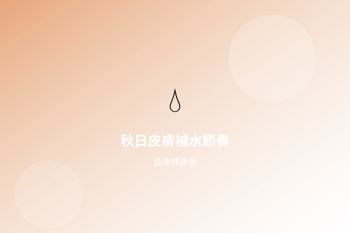
入秋冷氣與乾燥空氣易令皮膚緊繃脫屑。本文分享飲水、環境與外用保濕的日常節奏，屬一般健康資訊。
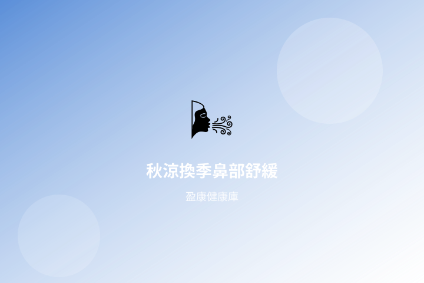
秋涼與冷氣交替，鼻腔易感乾燥或不適。本文分享保濕、環境與外用噴霧的日常舒緩思路，屬一般健康資訊。
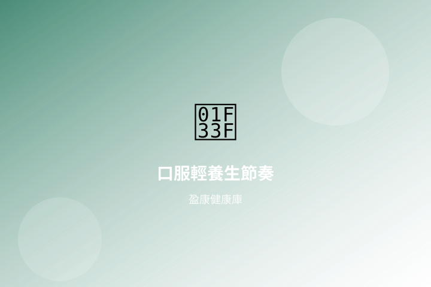
口服補充品何時吃、怎麼排進日常？本文用晨晚節奏整理輕養生小習慣，對齊盈康口服系列選購思路。
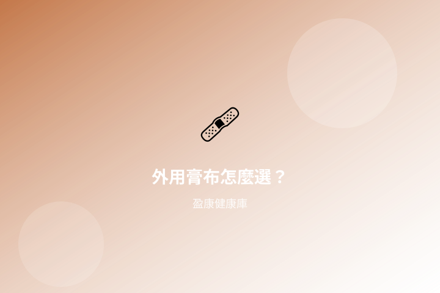
想用膏布作日常舒緩，先搞清楚透氣度、覆蓋面積與貼敷時間。本文整理選購與使用小知識，對齊輕養生節奏。
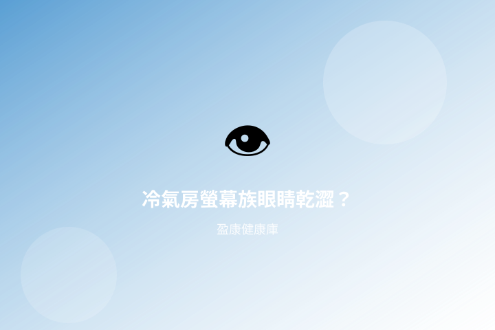
秋季冷氣與長時間對螢幕，令眼睛易感乾澀疲勞。本文分享眨眼節奏、環境濕度與日常選購小知識。
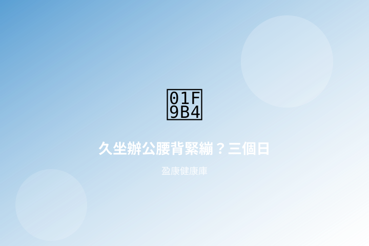
都市人長時間對著電腦，腰背與臀腿常感僵硬。本文分享伸展、站立節奏與外用膏布的輕養生搭配思路。
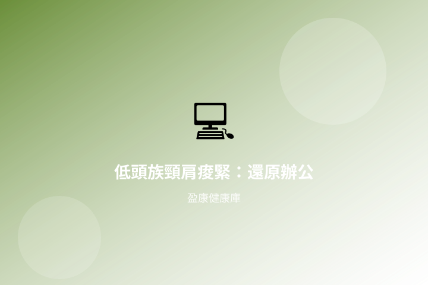
螢幕過低、滑鼠過遠，都會令頸肩長期緊繃。從螢幕高度、肩胛放鬆到熱敷，整理一套職場可執行清單。
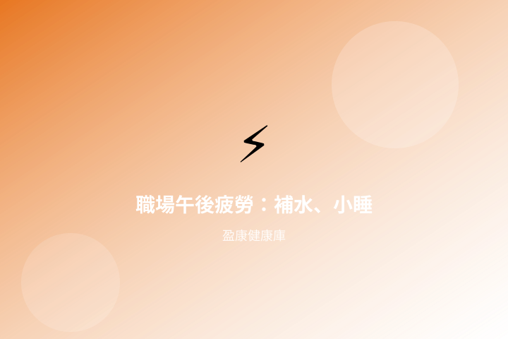
下午三點精神下滑不一定只靠咖啡。水分、短休息與溫和草本調理，幫你把效率留到下班前。
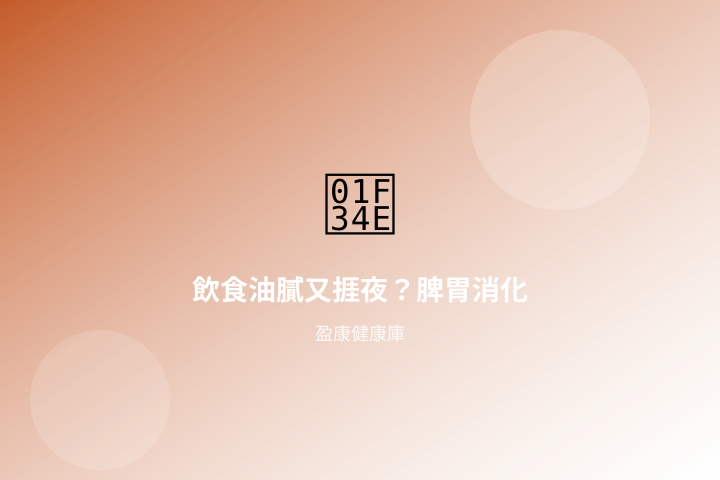
大餐後腹脹、小朋友偏食，都與脾胃負擔有關。從進食節奏、山楂益生菌到作息，整理溫和做法。
藍光、咖啡因與思緒打轉，是失眠常見推手。建立固定關機儀式，比臨時吞補充品更穩陣。
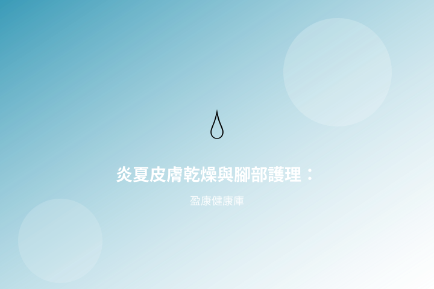
冷氣房令皮膚失水，腳跟龜裂、趾縫潮濕又是另一極端。分開處理乾與濕，外用更精準。
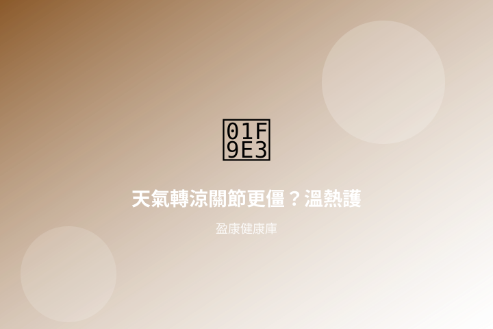
濕冷天氣常令人手腳僵硬。保暖、輕量活動與溫熱膏布，是寒濕季節常見的日常策略。
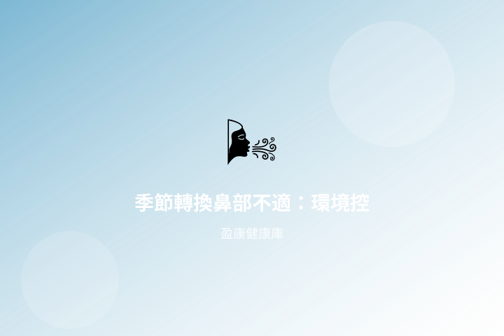
換季時塵蟎、冷暖交替令鼻腔敏感。清爽環境、沖洗習慣與溫和補充，減少對生活節奏的干擾。